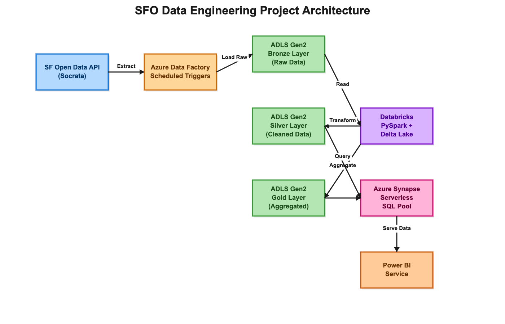

Data Engineer bridging Commercial Ops & IT
Leveraging 10 years of commercial experience to build robust AWS data platforms. I translate business urgency into reliable technical solutions using AWS Glue, Redshift, S3, Databricks, and PySpark.

Leveraging 10 years of commercial experience to build robust AWS data platforms. I translate business urgency into reliable technical solutions using AWS Glue, Redshift, S3, Databricks, and PySpark.
For a decade working in Commercial Operations, I was the liaison between business stakeholders and IT teams. I saw firsthand the frustration of delayed insights and siloed data.
Driven by a need to get things done faster, I taught myself the modern data stack; starting with SQL and Python, and moving fully into AWS Cloud Engineering.
Why this matters: I don't just build pipelines; I understand the commercial impact of the data flowing through them. I build reliable systems because I know what happens to the business when they break.
Processing 2M+ records daily with 99% reliability on AWS.

Commercial teams relied on slow, manual Excel reports for tender performance across regions, leading to delayed decision-making and missed revenue opportunities.
I hold technical education sessions on dimensional data warehouse design and analytics engineering fundamentals for the Indian Data Club (IDC) community. Every session is built on Ralph Kimball's dimensional modeling framework.
A practical guide to Kimball's four-step process (Business Process, Grain, Dimensions, Facts) using a retail sales scenario.
Deep dive into Type 0, 1, and 2 SCD strategies for historical tracking and their PySpark / SQL implementations.
Designing transaction, periodic snapshot, and accumulating snapshot facts, plus degenerate dimensions.
Active in technical community leadership; mentoring developers, designing challenges, and evaluating national hackathons in the data engineering space.
Organize community infrastructure and design hands-on educational challenges for the IDC community.
MITB ACM Student Chapter & IDC
Designed technical problem statements and evaluated 100+ team submissions in a 24-hour Databricks hackathon, assessing pipeline design, Kimball modeling, and execution.
Google Developer Groups Lucknow
Acted as an official hackathon mentor (May 2026) for the Agentic Premier League, assisting developers with AI agent architecture and cloud setup.